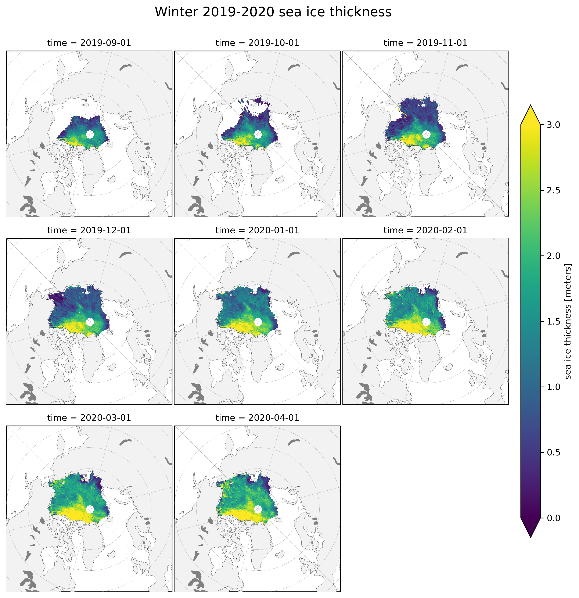
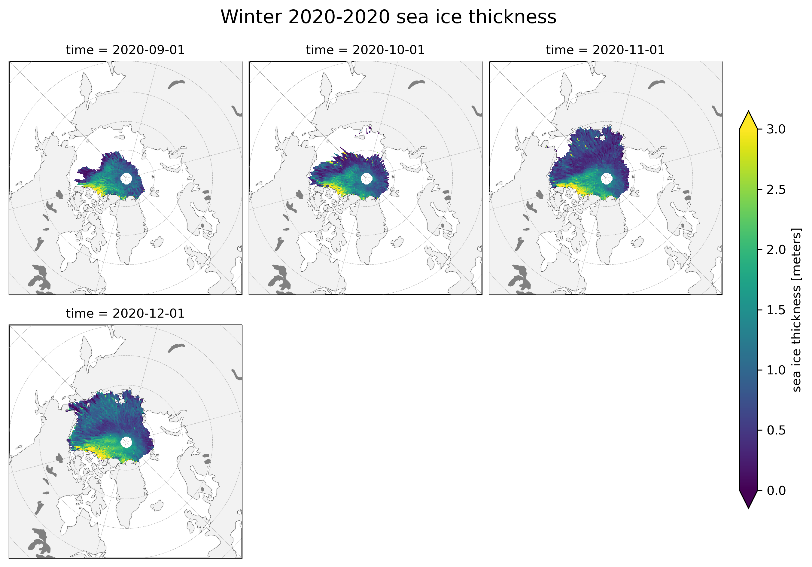
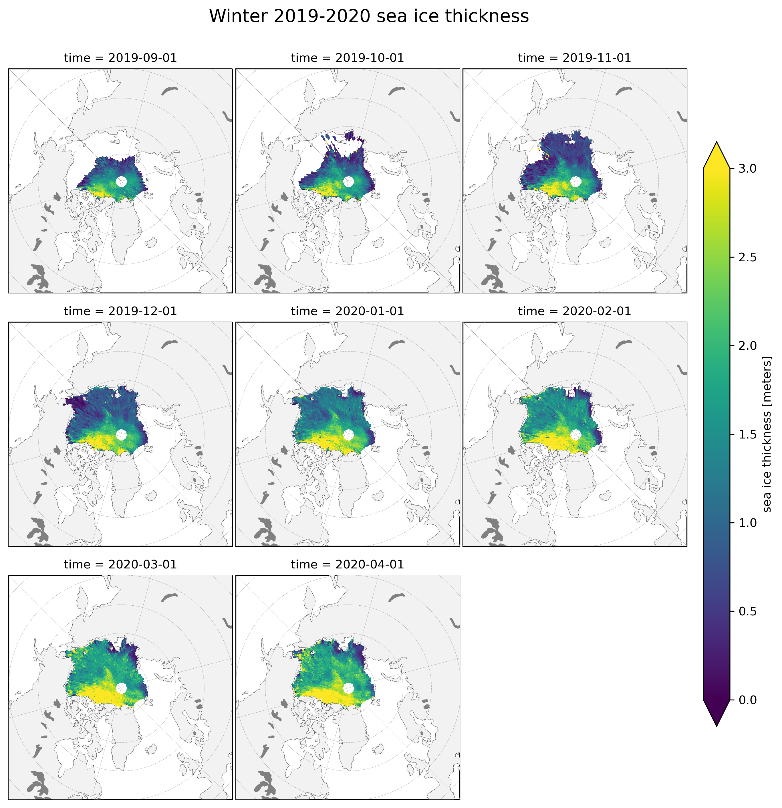
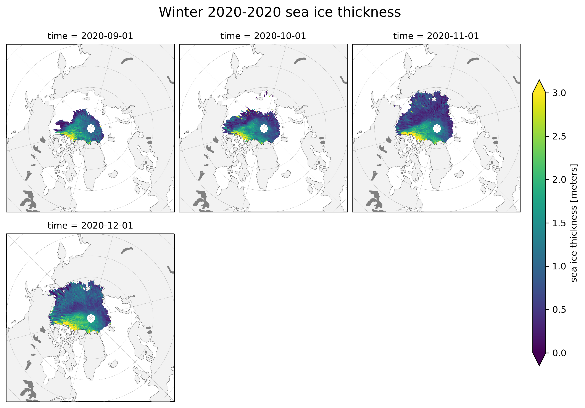

Mapping¶
This notebook uses the cartopy package to generate maps of the data variables of interest across the Arctic Ocean. This allows for visually examining differences between months in a given winter season. We also present sea ice drift vector data, which describes the magnitude and direction of sea ice movement throughout the season.
1) Read data¶
Here, we set the start and end years that define our analysis time period. We read in the ICESat-2 monthly files and the book dataset (produced in the data wrangling notebook) from the google storage bucket. You can also set interpolation preferences for the ICESat-2 data, which has some holes. By setting interpolation=True, the code calls an interpolation function that is defined in the utils module. Interpolation takes some time to run; to go through the notebook faster, set interpolation=False.
# Import notebook dependencies
import os
import xarray as xr
import numpy as np
import pandas as pd
# Import utils
from utils.misc_utils import restrictRegionally, is2_interp2d, getWinterDateRange
from utils.read_data_utils import read_is2_data, read_book_data
from utils.plotting_utils import plotIceDrifts, plotArcticMaps
# Remove warnings to improve display
import warnings
warnings.filterwarnings('ignore')
# Plotting
import cartopy.crs as ccrs
import cartopy.feature as cfeature
from matplotlib.axes import Axes
from cartopy.mpl.geoaxes import GeoAxes
from textwrap import wrap
import matplotlib as mpl
import matplotlib.pyplot as plt
GeoAxes._pcolormesh_patched = Axes.pcolormesh
%config InlineBackend.figure_format = 'retina'
mpl.rcParams['figure.dpi'] = 150
# Set desired date range
winter18_19 = pd.date_range(start="2018-11-01", end="2019-04-01", freq="MS")
winter19_20 = pd.date_range(start="2019-09-01", end="2020-04-01", freq="MS")
winter20_21 = pd.date_range(start="2020-09-01", end="2020-12-01", freq="MS") # We don't have data for 2021 yet for several of the datasets
winter_months = winter18_19.append(winter19_20).append(winter20_21)
# Read book data
book_ds = read_book_data()
book_ds = book_ds.sel(time = winter_months) # Get winter months
# Read ICESat-2 data
is2_ds = read_is2_data()
is2_ds = is2_ds.sel(time = winter_months) # Get winter months
# Decide whether or not to interpolate the ICESat-2 data or use the raw product, which has some holes in the data
interpolate = True
if (interpolate == True):
print("Interpolating ICESat-2 data...")
cdr_da = book_ds["cdr_seaice_conc_monthly"] # Get CDR data
is2_ds = is2_interp2d(is2_ds, cdr_da, method='nearest', interp_var='all')
print("Complete!")
# Combine datasets
ds = xr.merge([is2_ds, book_ds])
ds = ds.drop_vars("projection")
Interpolating ICESat-2 data...
---------------------------------------------------------------------------
KeyboardInterrupt Traceback (most recent call last)
<ipython-input-2-6f38aabf42b8> in <module>
18 print("Interpolating ICESat-2 data...")
19 cdr_da = book_ds["cdr_seaice_conc_monthly"] # Get CDR data
---> 20 is2_ds = is2_interp2d(is2_ds, cdr_da, method='nearest', interp_var='all')
21 print("Complete!")
22
~/github_repos/icesat2-book/utils/misc_utils.py in is2_interp2d(is2_ds, cdr_da, method, interp_var)
124 np_da = da.values
125 np_da = ma.masked_where((np.isnan(np_da)) & (np_cdr > 0.15) & (np_cdr < 1.01), np_da)
--> 126 np_interp = griddata((lons[~np_da.mask], lats[~np_da.mask]), # Interpolate
127 np_da[~np_da.mask].flatten(),
128 (lons, lats),
~/opt/anaconda3/envs/icesat2_book/lib/python3.8/site-packages/scipy/interpolate/ndgriddata.py in griddata(points, values, xi, method, fill_value, rescale)
256 elif method == 'nearest':
257 ip = NearestNDInterpolator(points, values, rescale=rescale)
--> 258 return ip(xi)
259 elif method == 'linear':
260 ip = LinearNDInterpolator(points, values, fill_value=fill_value,
~/opt/anaconda3/envs/icesat2_book/lib/python3.8/site-packages/scipy/interpolate/ndgriddata.py in __call__(self, *args)
109 xi = self._check_call_shape(xi)
110 xi = self._scale_x(xi)
--> 111 dist, i = self.tree.query(xi)
112 return self.values[i]
113
ckdtree.pyx in scipy.spatial.ckdtree.cKDTree.query()
<__array_function__ internals> in reshape(*args, **kwargs)
KeyboardInterrupt:
2) Restrict data to the Inner Arctic¶
We’ve built a region mask for the Arctic into the dataset used for this book; see the data wrangling notebook for more information. The region mask is included as a coordinate in the dataset, allowing us to easily access the different regions.
Here, we’ll restrict our data to the Inner Arctic, which is defined as the combined area of the Central Arctic, Beaufort Sea, Chukchi Sea, E Siberian Sea and the Laptev Sea. Figure from Petty et al., (2020):

Display regions¶
Keys correspond to regions. You can restrict the data by selecting keys corresponding to regions of interest.
regions = pd.DataFrame({"labels":ds.region_mask.attrs["labels"]},
index=ds.region_mask.attrs["keys"])
display(regions)
| labels | |
|---|---|
| 0 | Lakes, extended coast |
| 1 | non-region oceans |
| 2 | Sea of Okhotsk and Japan |
| 3 | Bering Sea |
| 4 | Hudson Bay |
| 5 | Gulf of St. Lawrence |
| 6 | Baffin Bay, Davis Strait & Labrador Sea |
| 7 | Greenland Sea |
| 8 | Barents Seas |
| 9 | Kara Sea |
| 10 | Laptev Sea |
| 11 | East Siberian Sea |
| 12 | Chukchi Sea |
| 13 | Beaufort Sea |
| 14 | Canadian Archipelago |
| 15 | Arctic Ocean |
| 20 | Land |
| 21 | Coast |
Select regions corresponding to the InnerArctic¶
The function used for this is included in the utils module. We’ll select all the keys corresponding to regions that make up the Inner Arctic.
regionKeyList = [10,11,12,13,15] #Inner Arctic
ds_innerArctic = restrictRegionally(ds, regionKeyList)
Regions selected: Inner Arctic
fig, axes = plt.subplots(1, 2, figsize=(8,8), sharex=True, sharey=True, subplot_kw={'projection':ccrs.NorthPolarStereo(central_longitude=-45)})
time = "Feb 2019"
for ax, da, title in zip(axes, [ds,ds_innerArctic], ["Entire region","Inner Arctic"]):
im = da.ice_thickness.sel(time=time)[0].plot.pcolormesh(ax=ax, x='longitude', y='latitude', vmin=0, vmax=3, extend='both', transform=ccrs.PlateCarree(), add_colorbar=False)
ax.add_feature(cfeature.LAND, color='0.95', zorder=5) #add land
ax.coastlines(linewidth=0.15, color = 'black', zorder = 10) #add coastlines
ax.set_extent([-179, 179, 55, 90], crs=ccrs.PlateCarree()) #zoom in so map only displays the Arctic
ax.set_title(title+" ("+time+")", fontsize = 12, y = 1, fontweight = 'medium')
plt.colorbar(im, cax=fig.add_axes([0.93, 0.326, 0.025, 0.352]), extend='both', label="sea ice thickness (m)")
plt.show()
ds = ds_innerArctic.copy()
3) Plot monthly data¶
Here, we’ll plot data for an entire 6-month winter season. This makes it easy to visually examine differences between months in the same season.
ICESat-2 sea ice thickness¶
da = ds["ice_thickness"]
for winter_n in [winter18_19, winter19_20, winter20_21]:
plotArcticMaps(da.sel(time=winter_n), minval=0, maxval=3, title="Winter "+str(winter_n[0].year)+"-"+str(winter_n[-1].year) + " sea ice thickness")
 



Sea ice drift vectors¶
Here, we’ll plot the sea ice drift vectors to get an idea of the direction and magnitude of sea ice movement throughout the winter.
uT = ds["drifts_uT"]
vT = ds["drifts_vT"]
magnitude = ds["drifts_magnitude"]
for winter_n in [winter18_19, winter19_20, winter20_21]:
plotIceDrifts(uT=uT.sel(time=winter_n),
vT=vT.sel(time=winter_n),
magnitude=magnitude.sel(time=winter_n),
minval=0, maxval=15, title="Winter "+str(winter_n[0].year)+"-"+str(winter_n[-1].year) + " sea ice drift")
Sea ice thickness with drift vectors overlayed¶
The argument base_var can be set to overlay the sea ice drift vectors on a variable of your choice.
base_var = ds["ice_thickness"]
for winter_n in [winter18_19, winter19_20, winter20_21]:
plotIceDrifts(uT=uT.sel(time=winter_n),
vT=vT.sel(time=winter_n),
magnitude=magnitude.sel(time=winter_n),
base_var=base_var.sel(time=winter_n),
minval=0, maxval=3, cmap="PuBu",
title="Winter "+str(winter_n[0].year)+"-"+str(winter_n[-1].year) + " sea ice thickness with overlayed drift vectors")
Plot just a month or two of data¶
The two mapping functions defined in this notebook are written to work even if you just want to plot a month or two of data. You can also set the argument col_wrap to adjust the number of columns in the plot to make the plot more visually appealing.
ds_2_months = ds.sel(time=slice("Nov 2018","Dec 2018"))
plotIceDrifts(uT=ds_2_months["drifts_uT"],
vT=ds_2_months["drifts_vT"],
magnitude=ds_2_months["drifts_magnitude"], col_wrap=2)
plotArcticMaps(da=ds["freeboard"].isel(time=8))
Try with another variable!¶
Try running this code in Binder! Select any variable and try plotting it. Just set var to your variable of interest, and adjust the function arguments as needed.
To view the variables in the dataset, run the cell below:
print(ds.data_vars)
var = "piomas_ice_thickness" # Put your variable here!
plotArcticMaps(ds[var])